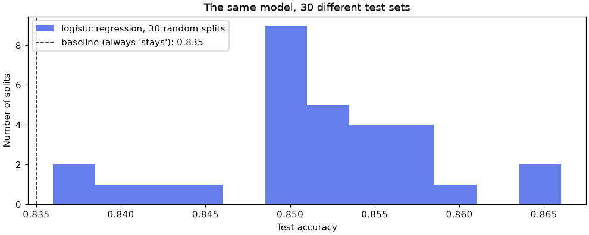
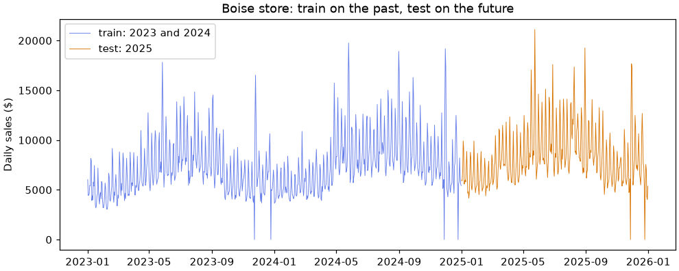

✂️ Lesson 1.2: Splits, Baselines and Leakage
A model's score is only as honest as the data it was graded on: learn to split data the way the model will really be used, and to spot a result that is too good to be true.
🎯 Learning Objectives
By the end of this lesson, you will be able to:
- Measure how much a test score moves from one random split to another, and explain why stratifying helps
- Make a train / validation / test split and use each part for its one job
- Split by time and by group when rows are related, and show how much a careless random split flatters a model
- Pick a baseline that fits the problem (most frequent class, mean, yesterday, same day last week)
- Detect target leakage and train-test contamination, and remove them
In This Lesson
🎭 The Dress Rehearsal Rule
In Lesson 1.1 you held back a test set, trained on the rest, and graded the model on the held-back rows. That one step is the whole reason you could trust the result: the model was graded on customers it had never seen. This lesson is about everything that can quietly break that promise, and about the yardsticks (baselines) that make a score mean something.
💡 Mental Model: The Dress Rehearsal
A theater company rehearses for weeks, then holds one dress rehearsal that is run exactly like opening night: full costumes, no stopping, no script in hand. If the dress rehearsal is easier than opening night (a prompter whispering lines, half the audience missing), it tells you nothing about the real show.
Your test set is the dress rehearsal for the day the model goes live. The rule: evaluate the model under the same conditions it will face in real use. If it will predict next month from data up to this month, the test must be "later" than the training data. If it will score brand-new products, the test must hold products it has never seen. If a column will not exist at prediction time, the model must not see it in testing either.
Each section below breaks the rule in a different way and measures the damage with real numbers. The pattern is always the same: the careless evaluation looks better. That is what makes these mistakes dangerous. Nobody goes looking for a bug when the score goes up.
🤔 Why This Matters
A model that looks 30% better in testing than it will be in use leads to wrong decisions: a budget approved for a forecast that will miss, a retention campaign aimed with a model that leans on information it will never have. Honest splitting is the cheapest quality control in machine learning. It costs a few lines of code, and it is the first thing an experienced reviewer checks.
🎲 One Split Is One Sample
Start from the same customers and the same ten features as Lesson 1.1.
import numpy as np
import pandas as pd
import matplotlib.pyplot as plt
from sklearn.model_selection import train_test_split
from sklearn.preprocessing import StandardScaler
from sklearn.linear_model import LogisticRegression
from sklearn.dummy import DummyClassifier
customers = pd.read_csv("data/customers_churn.csv")
features = ["tenure_months", "orders_12m", "spend_12m", "avg_order_value", "days_since_last_order",
"returns_12m", "return_rate", "support_tickets_12m", "discount_share", "app_user"]
X = customers[features]
y = customers["churned"]
print(X.shape, f"churn rate {y.mean():.3f}")Output
(6000, 10) churn rate 0.165In Lesson 1.1, logistic regression scored 0.848 on the split made with random_state=42. But 42 was an arbitrary choice. Which 1,500 customers land in the test set is luck, and a different draw gives a different score. How different? Wrap the whole split, scale, fit and score routine in a function and run it for 30 different seeds.
def split_and_score(seed, test_size=0.25):
X_train, X_test, y_train, y_test = train_test_split(
X, y, test_size=test_size, stratify=y, random_state=seed
)
scaler = StandardScaler().fit(X_train)
model = LogisticRegression().fit(scaler.transform(X_train), y_train)
return model.score(scaler.transform(X_test), y_test)
scores = pd.Series([split_and_score(seed) for seed in range(30)])
print(scores.describe().round(3))Output
count 30.000
mean 0.851
std 0.007
min 0.836
25% 0.849
50% 0.852
75% 0.855
max 0.866
dtype: float64fig, ax = plt.subplots(figsize=(9, 3.6), layout="constrained")
ax.hist(scores, bins=12, color="#667eea", label="logistic regression, 30 random splits")
ax.axvline(0.835, color="black", linestyle="--", linewidth=1, label="baseline (always 'stays'): 0.835")
ax.set_xlabel("Test accuracy")
ax.set_ylabel("Number of splits")
ax.set_title("The same model, 30 different test sets")
ax.legend(loc="upper left")
plt.show()
The same model scores anywhere from 0.836 to 0.866 depending only on the draw. The standard deviation, about 0.007, is the size of the "wobble". Compare that with the gap that matters: logistic regression beats the baseline by about 0.016 on average, little more than two wobbles. With one unlucky split you could conclude the model is no better than doing nothing; with a lucky one you might report 0.866 and believe it.
✅ What to Do About It
Treat a single test score as an estimate with an error bar, not a fact. Differences smaller than the wobble mean nothing. Lesson 1.3 gives you the standard tool for this: cross-validation, which averages over several splits automatically and reports the spread.
Stratify, or the Class Balance Wobbles Too
The function above stratifies. Without stratify=y, the share of churners in the test set also varies from draw to draw, which adds a second source of noise:
test_rates = {"random": [], "stratified": []}
for seed in range(30):
*_, y_te = train_test_split(X, y, test_size=0.25, random_state=seed)
test_rates["random"].append(y_te.mean())
*_, y_te = train_test_split(X, y, test_size=0.25, stratify=y, random_state=seed)
test_rates["stratified"].append(y_te.mean())
print(pd.DataFrame(test_rates).agg(["min", "max"]).round(3))Output
random stratified
min 0.151 0.165
max 0.181 0.165(*_, y_te = ... keeps only the last of the four results.) Unstratified test sets held anywhere from about 15% to 18% churners; stratified ones are pinned at 16.5%. Since the baseline's accuracy is exactly one minus the churn rate, an unstratified test set moves the yardstick as well as the score. Always stratify a classification split, and stratify on the target, never on a feature.
🧪 Train, Validation and Test
Lesson 1.1 warned that comparing models on the test set, again and again, slowly turns the test set into training data: you learn from it. Every time you pick the better of two options by their test score, a little luck from that particular test set leaks into your choice. The fix is a third part with its own job.
- Training set: every candidate model learns from it.
- Validation set: you compare candidates (different models, different settings) on it and pick one. It is allowed to influence your choices; that is its job.
- Test set: locked away until the choice is made, then used once to report how the chosen model will do. Because nothing was chosen with it, its score is unbiased.
scikit-learn has no three-way split function; call train_test_split twice. Carve off the test set first, then split the rest. To get 60/20/20, the second split takes 25% of the remaining 80%.
X_rest, X_test, y_rest, y_test = train_test_split(X, y, test_size=0.20, stratify=y, random_state=42)
X_train, X_val, y_train, y_val = train_test_split(X_rest, y_rest, test_size=0.25, stratify=y_rest, random_state=42)
print(len(X_train), len(X_val), len(X_test))
print(f"churn rates: {y_train.mean():.3f} {y_val.mean():.3f} {y_test.mean():.3f}")Output
3600 1200 1200
churn rates: 0.166 0.165 0.165Note stratify=y_rest in the second call: you stratify on the target of the data you are splitting. Now use the validation set for a real decision: how deep should a decision tree be? (Trees do not need scaling, so the raw features are fine.)
from sklearn.tree import DecisionTreeClassifier
val_by_depth = {}
for depth in [2, 3, 4, 5, 6, 8, 12]:
tree = DecisionTreeClassifier(max_depth=depth, random_state=42).fit(X_train, y_train)
val_by_depth[depth] = tree.score(X_val, y_val)
print(f"max_depth={depth:2d} train {tree.score(X_train, y_train):.3f} validation {val_by_depth[depth]:.3f}")
best_depth = max(val_by_depth, key=val_by_depth.get)
print("chosen depth:", best_depth)Output
max_depth= 2 train 0.858 validation 0.849
max_depth= 3 train 0.872 validation 0.864
max_depth= 4 train 0.876 validation 0.864
max_depth= 5 train 0.886 validation 0.859
max_depth= 6 train 0.898 validation 0.858
max_depth= 8 train 0.921 validation 0.848
max_depth=12 train 0.978 validation 0.823
chosen depth: 3Training accuracy climbs with every extra level, because a deeper tree memorizes more. Validation accuracy peaks and then falls: that is the overfitting you saw in Lesson 1.1's exercise, now used to make a decision. Depths 3 and 4 tie on validation (the same number of correct answers out of 1,200); max returns the first of equal values, which here is also the sensible tie-break: when two settings score the same, prefer the simpler one. Now, and only now, open the test set: refit the chosen tree on training plus validation data (more data, same settings) and grade it once, next to the baseline.
final_tree = DecisionTreeClassifier(max_depth=best_depth, random_state=42).fit(X_rest, y_rest)
baseline = DummyClassifier(strategy="most_frequent").fit(X_rest, y_rest)
print(f"baseline test accuracy {baseline.score(X_test, y_test):.3f}")
print(f"tree (d={best_depth}) test accuracy {final_tree.score(X_test, y_test):.3f}")Output
baseline test accuracy 0.835
tree (d=3) test accuracy 0.858The test score (0.858) is a little below the best validation score (0.864). That is normal and even expected: the winner on validation is partly the one that got lucky on those 1,200 rows. The test score is the number you report.
⚠️ Once Means Once
If the test score disappoints and you go back to try more depths, then look at the test set again, it has become a second validation set and no longer gives an unbiased estimate. In real projects, teams sometimes keep a final test set that nobody on the modeling team may look at. In this course, treat the test set as a sealed envelope.
📅 Splitting by Time, and Forecast Baselines
Pinecrest wants to forecast each store's daily sales. On opening night, the model will be trained on everything up to today and asked about days that have not happened yet. The dress rehearsal must look the same: train on the past, test on the future. A random split breaks that rule, and you can measure what it costs.
Load the daily sales and build a few calendar features. A model can only use numbers, so the store name becomes a code, and the date becomes a running day count, a day of the week and a day of the year.
sales = pd.read_csv("data/daily_store_sales.csv", parse_dates=["date"])
sales["store_code"] = sales["store"].map({"Asheville": 0, "Bend": 1, "Boise": 2, "Flagstaff": 3})
sales["day_index"] = (sales["date"] - sales["date"].min()).dt.days
sales["day_of_week"] = sales["date"].dt.dayofweek
sales["day_of_year"] = sales["date"].dt.dayofyear
sales["closed"] = (sales["event"] == "Closed").astype(int)
calendar = ["store_code", "day_index", "day_of_week", "day_of_year", "promo", "closed"]
print(sales[["date", "store", "sales"] + calendar].head(5))Output
date store sales store_code day_index day_of_week day_of_year promo closed
0 2023-01-01 Asheville 4838.69 0 0 6 1 0 0
1 2023-01-01 Bend 4533.55 1 0 6 1 0 0
2 2023-01-01 Boise 6026.92 2 0 6 1 0 0
3 2023-01-01 Flagstaff 4217.59 3 0 6 1 0 0
4 2023-01-02 Asheville 2695.58 0 1 0 2 0 0Now train the same random forest twice. Once on a random split, and once on the honest time split: 2023 and 2024 for training, all of 2025 for testing. Both test sets have the same size. To grade a number prediction, use mean absolute error (MAE): the average size of the miss, here in dollars. Lower is better, and Lesson 1.4 covers it with the other metrics.
from sklearn.ensemble import RandomForestRegressor
from sklearn.metrics import mean_absolute_error
def forest_mae(train, test):
forest = RandomForestRegressor(n_estimators=200, min_samples_leaf=3, random_state=42, n_jobs=-1)
forest.fit(train[calendar], train["sales"])
return mean_absolute_error(test["sales"], forest.predict(test[calendar]))
is_2025 = sales["date"].dt.year == 2025
past, future = sales[~is_2025], sales[is_2025]
shuffled_train, shuffled_test = train_test_split(sales, test_size=len(future), random_state=42)
print(f"test rows: {len(future):,}")
print(f"random split MAE: ${forest_mae(shuffled_train, shuffled_test):,.0f}")
print(f"time split MAE: ${forest_mae(past, future):,.0f}")Output
test rows: 1,460
random split MAE: $613
time split MAE: $854Same model, same features, same number of test days, and the random split claims the forecast is off by about $600 a day when it will really be off by about $850. The random split flatters the model by roughly 30%. Why? Sales have momentum: a strong Tuesday is usually followed by a strong Wednesday. With a random split, almost every test day has its neighbors (the day before and the day after) in the training set, and the forest leans on them. In real use, tomorrow's neighbors are never available. The time split takes them away, exactly as reality will.
boise = sales[sales["store"] == "Boise"]
fig, ax = plt.subplots(figsize=(9, 3.6), layout="constrained")
ax.plot(boise.loc[~is_2025, "date"], boise.loc[~is_2025, "sales"], color="#667eea", linewidth=0.6, label="train: 2023 and 2024")
ax.plot(boise.loc[is_2025, "date"], boise.loc[is_2025, "sales"], color="#d97706", linewidth=0.6, label="test: 2025")
ax.set_ylabel("Daily sales ($)")
ax.set_title("Boise store: train on the past, test on the future")
ax.legend(loc="upper left")
plt.show()
Baselines for a Forecast
Is $850 good? Only a baseline can say. For classification, Lesson 1.1's baseline was "always predict the most common class". For numbers, the equivalent is "always predict the training mean" (DummyRegressor). For a forecast there are two much tougher baselines that cost nothing: naive (tomorrow will be like today) and seasonal naive (next Saturday will be like last Saturday). Each is just a shifted column.
from sklearn.dummy import DummyRegressor
sales = sales.sort_values(["store", "date"])
sales["yesterday"] = sales.groupby("store")["sales"].shift(1)
sales["same_day_last_week"] = sales.groupby("store")["sales"].shift(7)
future = sales[sales["date"].dt.year == 2025]
mean_model = DummyRegressor(strategy="mean").fit(past[calendar], past["sales"])
print(f"training mean MAE ${mean_absolute_error(future['sales'], mean_model.predict(future[calendar])):,.0f}")
print(f"yesterday MAE ${mean_absolute_error(future['sales'], future['yesterday']):,.0f}")
print(f"same day last week MAE ${mean_absolute_error(future['sales'], future['same_day_last_week']):,.0f}")Output
training mean MAE $1,967
yesterday MAE $1,350
same day last week MAE $1,072The training mean misses by almost $2,000 a day. Copying last week's same day already gets down to about $1,070, with no model at all. The forest, honestly measured at about $850, beats every baseline, so it earns its place. Measured dishonestly at about $600 it would have looked like a triumph. The shifted columns are legitimate because they only look backward: on any given day, yesterday and last week are already known.
💡 Which Baseline?
Classification: the most frequent class (and, for ranking, a random list). Regression: the training mean or median, or a simple group average (each product's usual sales). Forecasting: the last value or the same period last week or last year. Recommendations: the most popular items. Always choose the strongest cheap baseline, not the weakest: beating "always predict the mean" proves little when "same day last week" is free.
👥 Splitting by Group
Rows can be related in other ways than time. weekly_demand.csv has 104 weeks for each of 24 products in each of 4 stores. Suppose Pinecrest plans to launch new products and wants to predict how they will sell. On opening night, the model meets products it has never seen. A random split, though, puts weeks of every product in both training and test, so the model is always tested on products it already knows.
GroupShuffleSplit splits by group instead of by row: every row of a product goes to the same side. Compare it with an ordinary random split, using a random forest on the numeric columns.
from sklearn.model_selection import GroupShuffleSplit
demand = pd.read_csv("data/weekly_demand.csv")
numeric = ["week_of_year", "store_sqft", "list_price", "price", "discount_pct",
"promo", "holiday_week", "avg_high_temp_f"]
row_train, row_test = train_test_split(demand, test_size=0.25, random_state=42)
splitter = GroupShuffleSplit(n_splits=1, test_size=0.25, random_state=42)
train_idx, test_idx = next(splitter.split(demand, groups=demand["product_id"]))
group_train, group_test = demand.iloc[train_idx], demand.iloc[test_idx]
shared = set(group_train["product_id"]) & set(group_test["product_id"])
print(f"group split: {group_test['product_id'].nunique()} test products, {len(shared)} shared with training")
for name, train, test in [("random rows", row_train, row_test), ("new products", group_train, group_test)]:
forest = RandomForestRegressor(n_estimators=200, min_samples_leaf=3, random_state=42, n_jobs=-1)
forest.fit(train[numeric], train["units_sold"])
mean_guess = DummyRegressor().fit(train[numeric], train["units_sold"])
print(f"{name:12s} forest MAE {mean_absolute_error(test['units_sold'], forest.predict(test[numeric])):5.2f}"
f" mean baseline MAE {mean_absolute_error(test['units_sold'], mean_guess.predict(test[numeric])):5.2f}")Output
group split: 6 test products, 0 shared with training
random rows forest MAE 10.23 mean baseline MAE 17.03
new products forest MAE 17.84 mean baseline MAE 20.87(test_size=0.25 in GroupShuffleSplit means a quarter of the groups: 6 of the 24 products.) On a random split the forest looks excellent, missing by about 10 units against the baseline's 17. On products it has never seen it misses by about 18 units, barely better than guessing the average. The forest had learned each known product's usual level (its list_price identifies it), which is useless for a new product.
Neither number is wrong; they answer different questions. "How well do we forecast the products we already sell?" calls for a row split (by time, as in the previous section). "How well can we predict a product we have never sold?" calls for a group split. Choosing the split is choosing the question. Other common groups: the same customer appearing in many rows (split by customer), several photos of the same object, repeated visits by the same patient.
🚰 Leakage: Too Good to Be True
Data leakage means the model gets information during training or testing that it will not have when it is used for real. The random time split above leaked tomorrow's neighbors. Here are the main kinds:
| Kind | What leaks | Example |
|---|---|---|
| Target leakage | a feature recorded after, or because of, the outcome | cancellation_reason only exists once a customer has left |
| Train-test contamination | test rows influence training: a scaler, an imputer or a feature selector fitted before the split | scaling with the whole table's mean (1.1, mistake 6); choosing features on all rows (mistake 4 below) |
| Time leakage | the future helps predict the past | a random split on daily sales; a "7-day average" that includes later days (mistake 5) |
| Group leakage | the same entity on both sides of the split | weeks of the same product in train and test when the question is about new products |
Target leakage is the most dramatic. Lesson 1.1 warned you about cancellation_reason. Now see what it does. First, a quick count:
customers["has_reason"] = customers["cancellation_reason"].notna().astype(int)
print(pd.crosstab(customers["has_reason"], customers["churned"]))Output
churned 0 1
has_reason
0 5008 367
1 0 625Every one of the 625 customers with a reason churned. Add that one flag to the ten honest features and retrain the Lesson 1.1 logistic regression on the Lesson 1.1 split:
def logreg_accuracy(columns):
X_tr, X_te, y_tr, y_te = train_test_split(
customers[columns], y, test_size=0.25, stratify=y, random_state=42
)
scaler = StandardScaler().fit(X_tr)
model = LogisticRegression().fit(scaler.transform(X_tr), y_tr)
return model.score(scaler.transform(X_te), y_te)
print(f"10 honest features: {logreg_accuracy(features):.3f}")
print(f"10 features + has_reason: {logreg_accuracy(features + ['has_reason']):.3f}")Output
10 honest features: 0.848
10 features + has_reason: 0.941From 0.848 to 0.941 with one column. Nothing else in this course will lift a churn model that much, and that is the clue. In real use the column is always empty, because on the day you score a customer they have not cancelled yet. The real accuracy of the leaky model would be no better than the honest one, and possibly worse, because it learned to rely on a signal that never comes.
🔎 How to Catch a Leak
Leaks rarely announce themselves with a name like cancellation_reason. Two habits catch most of them. The first is a question you ask about every column:
The second is a test: train a tiny model on each feature alone and compare it with the baseline. Real signals are weak one at a time. A single column that nearly solves the problem by itself deserves suspicion until you know exactly how and when it is recorded.
X_tr, X_te, y_tr, y_te = train_test_split(
customers[features + ["has_reason"]], y, test_size=0.25, stratify=y, random_state=42
)
single = {}
for column in features + ["has_reason"]:
stump = DecisionTreeClassifier(max_depth=2, random_state=42).fit(X_tr[[column]], y_tr)
single[column] = stump.score(X_te[[column]], y_te)
print(pd.Series(single).sort_values(ascending=False).head(4).round(3))
print(f"baseline: {1 - y_te.mean():.3f}")Output
has_reason 0.941
days_since_last_order 0.842
tenure_months 0.835
spend_12m 0.835
dtype: float64
baseline: 0.835Every honest feature on its own barely moves off the baseline's 0.835 (even the strongest real signal, recency, reaches only 0.842). One column alone reaches 0.941. That gap is the alarm. From here on, has_reason and cancellation_reason stay out of every model.
⚠️ Leaks in Disguise
Watch for columns updated after the snapshot date (a "last login" refreshed yesterday), IDs that encode the outcome (account numbers reissued after fraud), totals that include the period you are predicting, and the missingness of a field that is only filled in later. When a result jumps, ask "what does this column know that I would not?" before you celebrate.
⚠️ Common Mistakes
Two of these raise errors. Three do not, and those are the ones to fear: the code runs and the score looks better than it should.
1. Unpacking the Split in the Wrong Order
X_train, y_train, X_test, y_test = train_test_split(X, y, test_size=0.25, stratify=y, random_state=42)
LogisticRegression().fit(X_train, y_train)Error
ValueError: y should be a 1d array, got an array of shape (1500, 10) instead.What it means: train_test_split returns the X parts first, then the y parts: X_train, X_test, y_train, y_test. Here "y_train" actually holds the 1,500 test rows of X, a table with 10 columns, where scikit-learn expects a single target column. Fix: use the standard order; when you split a whole DataFrame instead (train, test = train_test_split(df, ...)), there are only two results.
2. Stratifying on a Number
train_test_split(demand, test_size=0.25, stratify=demand["units_sold"], random_state=42)Error
ValueError: The least populated classes in y have only 1 member, which is too few. The minimum number of groups for any class cannot be less than 2. Classes with too few members are: [127, 131, 136, 137, 140, 141, 144, 145, 154, 156, 157, 160, 161, 163, 164, 170, 171, 173, 179, 180, 186, 191, 192, 202, 207, 213, 215, 220, 228, 239, 251, 282, 299, 420]What it means: stratifying treats every distinct value as a class, and some sales figures occur only once. Fix: stratify only classification targets. For a skewed regression target you can stratify on bins of it, for example stratify=pd.qcut(demand["units_sold"], 5), but for time-ordered data like this, split by time instead.
3. A Whole Number as test_size
tiny_train, tiny_test = train_test_split(customers, test_size=25, random_state=42)
print(len(tiny_train), len(tiny_test))Output (no error, and that is the problem)
5975 25What happened: a float is a share (0.25 = 25%) but an integer is a count: 25 means 25 rows. A test set of 25 customers wobbles enormously. Fix: write test_size=0.25. Integers are handy on purpose, as in the time section's test_size=len(future).
4. Choosing Features Before Splitting
This one is subtle enough that it has fooled published research. Make 2,000 columns of pure random noise and a target that is a coin flip. No model can predict a coin flip from noise, so the honest accuracy is about 0.5. Now let a feature selector (Lesson 2.4) pick the 20 columns most related to the target, using all the rows, and only then split:
from sklearn.feature_selection import SelectKBest
rng = np.random.default_rng(42)
noise = pd.DataFrame(rng.normal(size=(200, 2000)))
coin = pd.Series(rng.integers(0, 2, size=200))
picked = noise.loc[:, SelectKBest(k=20).fit(noise, coin).get_support()] # selected on ALL rows
a_tr, a_te, b_tr, b_te = train_test_split(picked, coin, test_size=0.5, stratify=coin, random_state=42)
print(f"select, then split: {LogisticRegression().fit(a_tr, b_tr).score(a_te, b_te):.2f}")
n_tr, n_te, b_tr, b_te = train_test_split(noise, coin, test_size=0.5, stratify=coin, random_state=42)
selector = SelectKBest(k=20).fit(n_tr, b_tr) # selected on training rows only
model = LogisticRegression().fit(selector.transform(n_tr), b_tr)
print(f"split, then select: {model.score(selector.transform(n_te), b_te):.2f}")Output (no error, and that is the problem)
select, then split: 0.78
split, then select: 0.47What happened: out of 2,000 noise columns, some match the coin flips by chance, including on the test rows, because the selector saw them. The "model" predicts coin flips 78% of the time, which is impossible. Done honestly, it scores 0.47: a coin flip. Fix: every step that learns from data (scaling, imputing, selecting) is fitted on the training rows only. Lesson 2.2's Pipeline makes that automatic.
5. A Feature That Peeks at the Future
A "typical sales level" feature sounds sensible. Computed with a centered 7-day window, though, it averages the three days after each date too:
sales = sales.sort_values(["store", "date"])
sales["week_avg_centered"] = sales.groupby("store")["sales"].transform(lambda s: s.rolling(7, center=True, min_periods=1).mean())
peeking = calendar + ["week_avg_centered"]
past, future = sales[sales["date"].dt.year < 2025], sales[sales["date"].dt.year == 2025]
forest = RandomForestRegressor(n_estimators=200, min_samples_leaf=3, random_state=42, n_jobs=-1)
forest.fit(past[peeking], past["sales"])
print(f"time split MAE with a peeking feature: ${mean_absolute_error(future['sales'], forest.predict(future[peeking])):,.0f}")Output (no error, and that is the problem)
time split MAE with a peeking feature: $504What happened: even with an honest time split, the error collapses, because each test day's feature already contains that day and the three after it. On opening night, those days do not exist yet. Fix: build time features from the past only: shift(1) before any rolling, never center=True, and ask for every feature "could I have computed this the evening before?"
🛠️ Project: An Honest Churn Evaluation
Pinecrest's marketing lead has heard that a colleague's churn model is "94% accurate" and wants to know what your model can really do. You will audit the columns for leaks, set aside a sealed test set, choose a model on validation data, report one honest test score next to the baseline, and write it up. Work in a new notebook called lesson_1_2_project or a script called honest_eval.py. Allow about 40 minutes.
🛠️ Step 1: Load and split three ways (5 min)
Split the whole table, so IDs and every column stay lined up, then take the features from each part. The candidate columns include the suspicious flag on purpose: the audit should catch it.
import pandas as pd
from sklearn.model_selection import train_test_split
customers = pd.read_csv("data/customers_churn.csv")
customers["has_reason"] = customers["cancellation_reason"].notna().astype(int)
candidates = ["tenure_months", "orders_12m", "spend_12m", "avg_order_value", "days_since_last_order",
"returns_12m", "return_rate", "support_tickets_12m", "discount_share", "app_user", "has_reason"]
rest, test = train_test_split(customers, test_size=0.20, stratify=customers["churned"], random_state=42)
train, val = train_test_split(rest, test_size=0.25, stratify=rest["churned"], random_state=42)
print(len(train), len(val), len(test))Output
3600 1200 1200From now until Step 5, test is not touched, not even to look at its first rows.
🛠️ Step 2: Audit every column for leaks (10 min)
Fit a depth-2 tree on each candidate alone (training rows) and score it on the validation rows. Flag anything far above the baseline.
from sklearn.tree import DecisionTreeClassifier
baseline_acc = 1 - val["churned"].mean()
audit = {}
for column in candidates:
stump = DecisionTreeClassifier(max_depth=2, random_state=42).fit(train[[column]], train["churned"])
audit[column] = stump.score(val[[column]], val["churned"])
audit = pd.Series(audit).sort_values(ascending=False)
print(f"baseline {baseline_acc:.3f}")
print(audit.head(3).round(3))
suspects = audit[audit > baseline_acc + 0.05].index.tolist()
print("suspects:", suspects)Output
baseline 0.835
has_reason 0.942
days_since_last_order 0.848
tenure_months 0.835
dtype: float64
suspects: ['has_reason']The audit flags has_reason. Its origin (a field filled when an account is closed) confirms the leak, so it goes. A flag alone is not proof: always check how a suspect column is recorded before you drop it.
🛠️ Step 3: Remove the leak and set the baseline (5 min)
from sklearn.dummy import DummyClassifier
features = [c for c in candidates if c not in suspects]
X_train, y_train = train[features], train["churned"]
X_val, y_val = val[features], val["churned"]
baseline = DummyClassifier(strategy="most_frequent").fit(X_train, y_train)
print(len(features), "features kept")
print(f"baseline validation accuracy {baseline.score(X_val, y_val):.3f}")Output
10 features kept
baseline validation accuracy 0.835🛠️ Step 4: Choose a model on validation (10 min)
Compare three candidates: logistic regression, the depth-3 tree the validation set chose in the lesson, and the random forest from Lesson 1.1. Logistic regression needs scaled inputs, so scale by hand (fit on training rows only); the tree and the forest use raw features.
from sklearn.preprocessing import StandardScaler
from sklearn.linear_model import LogisticRegression
from sklearn.ensemble import RandomForestClassifier
scaler = StandardScaler().fit(X_train)
logreg = LogisticRegression().fit(scaler.transform(X_train), y_train)
tree = DecisionTreeClassifier(max_depth=3, random_state=42).fit(X_train, y_train)
forest = RandomForestClassifier(n_estimators=200, min_samples_leaf=5, random_state=42, n_jobs=-1).fit(X_train, y_train)
val_scores = {
"logistic regression": logreg.score(scaler.transform(X_val), y_val),
"decision tree (d=3)": tree.score(X_val, y_val),
"random forest": forest.score(X_val, y_val),
}
for name, score in val_scores.items():
print(f"{name:20s} {score:.3f}")
print("chosen:", max(val_scores, key=val_scores.get))Output
logistic regression 0.850
decision tree (d=3) 0.864
random forest 0.870
chosen: random forest🛠️ Step 5: Open the test set, once (5 min)
Refit the chosen model and the baseline on training plus validation rows, then score both on the test set. This is the only time the test set is used.
X_rest, y_rest = rest[features], rest["churned"]
X_test, y_test = test[features], test["churned"]
final = RandomForestClassifier(n_estimators=200, min_samples_leaf=5, random_state=42, n_jobs=-1).fit(X_rest, y_rest)
final_baseline = DummyClassifier(strategy="most_frequent").fit(X_rest, y_rest)
test_acc = final.score(X_test, y_test)
base_acc = final_baseline.score(X_test, y_test)
print(f"baseline test accuracy {base_acc:.3f}")
print(f"forest test accuracy {test_acc:.3f}")Output
baseline test accuracy 0.835
forest test accuracy 0.866About 0.87 against a baseline of 0.835: a real but modest gain on accuracy. Lesson 1.1 showed that the same kind of model ranks customers far better than accuracy suggests, and Lesson 1.4 gives you the measures to say so properly.
🛠️ Step 6: Write the evaluation report (5 min)
Build the report from your variables, so it can never disagree with the code, and save it.
report = f"""Churn model evaluation
Split : {len(train):,} train / {len(val):,} validation / {len(test):,} test (stratified, seed 42)
Leak audit : dropped {', '.join(suspects)} (filled only after a customer leaves)
Chosen on val. : random forest ({val_scores['random forest']:.3f} validation accuracy)
Test accuracy : {test_acc:.3f} (baseline {base_acc:.3f}, gain {test_acc - base_acc:+.3f})
Note : the test set was used once; 0.94-style results came from the leaked column"""
with open("evaluation_report.txt", "w", encoding="utf-8") as f:
f.write(report + "\n")
print(report)Output
Churn model evaluation
Split : 3,600 train / 1,200 validation / 1,200 test (stratified, seed 42)
Leak audit : dropped has_reason (filled only after a customer leaves)
Chosen on val. : random forest (0.870 validation accuracy)
Test accuracy : 0.866 (baseline 0.835, gain +0.031)
Note : the test set was used once; 0.94-style results came from the leaked column✅ Project Completion Checklist
- Your split has 3,600 training, 1,200 validation and 1,200 test customers, all at the same churn rate
- The leak audit ran on training and validation rows only and flagged
has_reason - The model was chosen by validation accuracy, not test accuracy
- The test set was used exactly once, for the final model and the baseline
evaluation_report.txtstates the split, the dropped column, the chosen model and the test score next to the baseline
🏋️ Hands-on Exercises
Exercise 1 continues from the lesson's teaching blocks (it uses split_and_score); the others load their own data.
🏋️ Exercise 1: Bigger Test Sets Wobble Less
Use split_and_score(seed, test_size) from the lesson to compute the standard deviation of the test accuracy over seeds 0 to 19 for test sizes 0.1, 0.25 and 0.5. How does the wobble change, and what is the price of a bigger test set?
💡 Hint
A list comprehension inside pd.Series(...), then .std(), inside a loop over the three sizes.
✅ Solution
for size in [0.1, 0.25, 0.5]:
accs = pd.Series([split_and_score(seed, test_size=size) for seed in range(20)])
print(f"test_size={size:<4} test rows {int(len(X) * size):>5,} std {accs.std():.4f}")Output
test_size=0.1 test rows 600 std 0.0142
test_size=0.25 test rows 1,500 std 0.0065
test_size=0.5 test rows 3,000 std 0.0025The wobble shrinks as the test set grows, here even faster than one over the square root of its size, because the training and test rows are carved out of the same 6,000 customers. The price is fewer training rows, which usually makes the model itself a little worse. Cross-validation (Lesson 1.3) escapes the trade-off: every row is used for testing once and for training the rest of the time.
🏋️ Exercise 2: A Time Split with train_test_split
train_test_split has a shuffle argument. Load daily_store_sales.csv, sort it by date, and split it with shuffle=False and test_size=1460 (365 days times 4 stores). Print the first and last date in each part. Why must you sort first, and why does stratify not work with shuffle=False?
💡 Hint
With shuffle=False the test set is simply the last rows of the table, in whatever order the table is in.
✅ Solution
daily = pd.read_csv("data/daily_store_sales.csv", parse_dates=["date"]).sort_values(["date", "store"])
d_train, d_test = train_test_split(daily, test_size=1460, shuffle=False)
for name, part in [("train", d_train), ("test", d_test)]:
print(f"{name:5s} {len(part):>5,} rows {part['date'].min():%Y-%m-%d} to {part['date'].max():%Y-%m-%d}")Output
train 2,924 rows 2023-01-01 to 2024-12-31
test 1,460 rows 2025-01-01 to 2025-12-31Without shuffling, the split simply cuts the table, so it is a time split only if the rows are in time order. Stratifying needs to move rows around to balance classes, which is exactly what shuffle=False forbids, so scikit-learn refuses the combination. For several time-ordered folds, Lesson 1.3 introduces TimeSeriesSplit.
🏋️ Exercise 3: The Future Is a Little Different
Load transactions.csv and print the fraud rate for each month. Then make a time split (January to May for training, June for testing) and compare the June fraud rate with the rate in a stratified random 30% test set. What does the difference mean for a fraud model evaluated on a random split?
💡 Hint
Parse timestamp as a date and group by .dt.month; the mean of is_fraud is the fraud rate.
✅ Solution
tx = pd.read_csv("data/transactions.csv", parse_dates=["timestamp"])
month = tx["timestamp"].dt.month.rename("month")
print((tx.groupby(month)["is_fraud"].mean() * 100).round(2).rename("fraud %"))
june = tx[month == 6]
_, random_test = train_test_split(tx, test_size=0.3, stratify=tx["is_fraud"], random_state=42)
print(f"June test fraud rate: {june['is_fraud'].mean():.2%}")
print(f"random test fraud rate: {random_test['is_fraud'].mean():.2%}")Output
month
1 1.00
2 0.99
3 0.87
4 0.87
5 0.76
6 0.77
Name: fraud %, dtype: float64
June test fraud rate: 0.77%
random test fraud rate: 0.87%The fraud rate drifts down over the half year, so June has noticeably fewer frauds than the average month. A random split mixes the months and hides that drift; a time split shows the model the slightly different world it will really meet. Data that changes over time is called drift, and Lesson 12.2 shows how to monitor for it after deployment.
🏋️ Exercise 4: Build a Leak Detector (Stretch)
Write a function leak_check(df, target, columns, margin=0.05) that splits df (stratified, 25% test, seed 42), fits a depth-2 tree on each column alone, and returns the columns whose test accuracy beats the majority-class baseline by more than margin. Test it on transactions.csv after planting a leak: a chargeback column (the bank reversed the payment weeks later) that is 1 for 70% of the frauds, chosen at random with np.random.default_rng(42), and 0 otherwise. Does it catch the leak and nothing else?
💡 Hint
rng.random(len(tx)) < 0.7 gives a True/False array; combine it with tx["is_fraud"] == 1 using &. The baseline is 1 - y_test.mean() when 0 is the majority class.
✅ Solution
def leak_check(df, target, columns, margin=0.05):
train, test = train_test_split(df, test_size=0.25, stratify=df[target], random_state=42)
baseline = test[target].value_counts(normalize=True).max()
flagged = {}
for column in columns:
stump = DecisionTreeClassifier(max_depth=2, random_state=42).fit(train[[column]], train[target])
acc = stump.score(test[[column]], test[target])
if acc > baseline + margin:
flagged[column] = round(acc, 4)
return baseline, flagged
tx = pd.read_csv("data/transactions.csv")
rng = np.random.default_rng(42)
tx["chargeback"] = ((tx["is_fraud"] == 1) & (rng.random(len(tx)) < 0.7)).astype(int)
numeric_cols = ["account_age_days", "amount", "hour", "items", "device_new", "billing_shipping_mismatch",
"country_mismatch", "card_attempts", "velocity_24h", "chargeback"]
base, flagged = leak_check(tx, "is_fraud", numeric_cols, margin=0.002)
print(f"baseline {base:.4f}")
print("flagged:", flagged)Output
baseline 0.9913
flagged: {'chargeback': 0.998}With 99.1% legitimate payments, accuracy can only rise by 0.9 points at most, so the margin must be tiny (0.002 here); on rare-event data a ranking measure works better, which is what Lesson 1.4 adds. The detector flags only chargeback: no honest single column gets close. In real fraud data, chargebacks are the classic leak: they are how fraud is confirmed, weeks after the payment you need to score.
🎯 Quick Quiz
🎯 Check Your Understanding
Question 1: What does this print?
quiz_a, quiz_b = train_test_split(list(range(10)), test_size=0.3, random_state=0)
print(len(quiz_a), len(quiz_b))Question 2: You will use weekly_demand.csv (2024 and 2025) to build a model that forecasts next week's units for the products Pinecrest already sells. Which evaluation matches how the model will be used?
Question 3: A colleague adds refund_issued to a model that predicts whether an order will be returned, and test accuracy jumps from 0.81 to 0.98. A single-feature check shows refund_issued alone scores 0.97. What is the most likely explanation?
Question 4: You compared 12 settings on the validation set; the best scored 0.874 on validation. You then refit it and scored 0.866 on the test set. Which number should you report as the model's expected accuracy?
Question 5: When should you use GroupShuffleSplit instead of an ordinary random split?
❓ Common Questions at This Stage
How big should the test set be?
Big enough that its wobble is smaller than the differences you care about. With a few thousand rows, 20 to 25% is the usual choice. With millions of rows, 1% can be plenty. With a few hundred rows, any single test set wobbles badly, and cross-validation (Lesson 1.3) is the better tool. For rare classes, count the rare cases: a test set with 30 frauds cannot measure fraud detection precisely, whatever its total size.
Do I always need a separate validation set?
You need something other than the test set for making choices. A fixed validation set is the simplest. Cross-validation on the training data (Lesson 1.3) does the same job with less wobble and is what most projects use; the test set stays sealed either way.
After testing, should I retrain on all the data before deploying?
Usually yes: once the choice is final and the test score is reported, refitting on every row gives the deployed model a little more to learn from, and the test score remains a fair (slightly cautious) estimate. For time-ordered data, retraining on the most recent data is especially valuable. Module 12 covers retraining schedules.
Is it a leak to use features that are correlated with the target?
No. Correlation with the target is the whole point of a feature. A leak is about timing and availability: information that would not exist, or would not look the same, at the moment of prediction. A strong, honest feature such as days since the last order is exactly what you want.
🌟 Going Further: Bonus Challenge
Rebuild the daily-sales forecast with honest lag features: yesterday, same_day_last_week and a 7-day average built from shift(1) then rolling(7). Train the random forest on 2023 and 2024 (drop the first rows, which have no history) and test on 2025. Does it beat the $850 calendar-only forest and the seasonal-naive baseline? Then try the centered average again and write down, in one sentence each, why the two results differ. Lesson 10.4 returns to this problem with a sequence model.
📓 Learning Journal
Take five minutes to write in your learning journal (the journal.md file you started in Lesson 0.1, or a paper notebook). Jot down:
- Key concepts you learned today
- Techniques that clicked (and the ones that have not, yet)
- Questions or confusion to come back to
- Ideas to try on your own
- Progress and feelings: how did this lesson go for you?
✍️ This lesson's prompt: Explain the dress rehearsal rule in your own words. Then pick the problem you framed in Lesson 0.1's journal entry and describe its dress rehearsal: should it be split at random, by time or by group, which baseline would you compare with, and which column in your data would be most tempted to leak?
📝 Lesson Summary
🎓 Key Takeaways
- Evaluate a model under the conditions it will face in use: that one rule decides how to split
- A single test score wobbles (about ±0.007 accuracy here); differences smaller than the wobble mean nothing
- Stratify classification splits on the target so the class balance, and the baseline, stay fixed
- Training data fits, validation data chooses, test data grades once
- Time-ordered data needs a time split; related rows need a group split when the model will meet new groups
- Pick the strongest free baseline: most frequent class, mean, yesterday, same day last week
- A result that is too good to be true usually is: check single-feature scores and ask when each column is recorded
🏆 What You've Accomplished
- You measured the noise in a single train/test split with 30 repeats
- You chose a tree depth with a validation set and reported one unbiased test score
- You showed that a random split flatters a sales forecast by about 30% and a new-product model even more
- You caught a planted leak with a single-feature audit and produced an honest evaluation report
🔭 Looking Ahead
In Lesson 1.3: Cross-Validation you will turn today's 30-split experiment into a standard tool: k-fold cross-validation averages over several splits automatically, reports the spread, and has versions for stratified, grouped and time-ordered data, so you can compare models without using up the test set.
📋 Before the Next Lesson
- Keep
split_and_scorehandy: Lesson 1.3 replaces it with one line. - Look through
data/README.mdfor any column, in any file, that might be recorded after the event it would help predict. Note what you find in your journal. - Rerun the project with
random_state=7in both splits. Does the same model win on validation? How far does the test score move?
🌱 Encouragement for the Journey
Today you did something many working models never get: you tried to prove your own results wrong, and you caught three ways a score can lie. That skepticism is not pessimism. It is what makes your next good result believable. If the different kinds of leakage still blur together, that is normal; you will meet each again, and by the end of Module 2 checking for them will feel automatic.